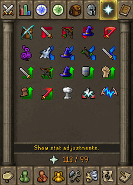

")
Prayer - The Ancient Curses
The Temple at Senntisten - The Ancient Hymnal

To view what curses are available to you in game, simply click on the Prayer icon. This can be found either at the top-right corner of the in-game menu (windowed mode) or at the bottom-right of the screen (resizable or full-screen mode). You should now have a list of all the curses, with those currently available to you being lit up.
Finally, not only does the altar at Senntisten Temple allow you to switch to curses, it also provides a handy 15% boost over your maximum Prayer level.
Curse Effects
Listed below are all the curse effects currently available within RuneScape and what Prayer level you will need in order to use them:
Curse |
Prayer Level Required |
Effect |
![[image]](../../img/main/kbase/skills/prayer/curses/protect_item.gif) Protect Item |
50 |
If this curse is active it allows you to keep an additional item when you die. |
![[image]](../../img/main/kbase/skills/prayer/curses/sap_warrior.gif) Sap Warrior+ |
50 |
Drain enemy Attack, Strength and Defence by 10%, increasing to 20% over time. |
Sap Ranger+ |
52 |
Drain enemy Ranged and Defence by 10%, increasing to 20% over time. |
![[image]](../../img/main/kbase/skills/prayer/curses/sap_mage.gif) Sap Mage+ |
54 |
Drain enemy Magic and Defence by 10%, increasing to 20% over time. |
![[image]](../../img/main/kbase/skills/prayer/curses/sap_spirit.gif) Sap Spirit+ |
56 |
Drain enemy special attack energy. |
![[image]](../../img/main/kbase/skills/prayer/curses/berserker.gif) Berserker |
59 |
Boosted combat stats last 15% longer. |
Deflect Summoning*~ |
62 |
Deflects damage caused by Summoning scrolls and enemy familiars. |
![[image]](../../img/main/kbase/skills/prayer/curses/deflect_magic.gif) Deflect Magic*~ |
65 |
Protects against damage from Magic attacks and can deflect some of the damage back onto the attacker. |
![[image]](../../img/main/kbase/skills/prayer/curses/deflect_missiles.gif) Deflect Missiles*~ |
68 |
Protects against damage from Ranged attacks and can deflect some of the damage back onto the attacker. |
![[image]](../../img/main/kbase/skills/prayer/curses/deflect_melee.gif) Deflect Melee*~ |
71 |
Protects against damage from melee attacks and can deflect some of the damage back onto the attacker. |
Leech Attack+ |
74 |
Boosts Attack by 5%, increasing to 10% over time. Drains enemy Attack by 10%, increasing to 25% over time. |
![[image]](../../img/main/kbase/skills/prayer/curses/leech_ranged1.gif) Leech Ranged+ |
76 |
Boosts Ranged by 5%, increasing to 10% over time. Drains enemy Ranged by 10%, increasing to 25% over time. |
![[image]](../../img/main/kbase/skills/prayer/curses/leech_magic.gif) Leech Magic+ |
78 |
Boosts Magic by 5%, increasing to 10% over time. Drains enemy Magic by 10%, increasing to 25% over time. |
![[image]](../../img/main/kbase/skills/prayer/curses/leech_defence.gif) Leech Defence+ |
80 |
Boosts Defence by 5%, increasing to 10% over time. Drains enemy Defence by 10%, increasing to 25% over time. |
![[image]](../../img/main/kbase/skills/prayer/curses/leech_strength.gif) Leech Strength+ |
82 |
Boosts Strength by 5%, increasing to 10% over time. Drains enemy Strength by 10%, increasing to 25% over time. |
![[image]](../../img/main/kbase/skills/prayer/curses/leech_energy.gif) Leech Energy+ |
84 |
Boosts run energy, while draining enemy run energy by up to 10%. |
![[image]](../../img/main/kbase/skills/prayer/curses/leech_special_attack.gif) Leech Special Attack+ |
86 |
Boosts special attack energy, while draining enemy special attack energy by up to 10%. |
![[image]](../../img/main/kbase/skills/prayer/curses/wrath.gif) Wrath~ |
89 |
If this curse is active when you die, it deals damage of up to 25% of your max Prayer to all nearby enemies. Note that this curse will not hurt other players outside of PvP areas, and it won't hit multiple targets in non-multicombat zones. |
![[image]](../../img/main/kbase/skills/prayer/curses/soul_split.gif) Soul Split~ |
92 |
If this curse is active when you are fighting another player, they will lose 1 Prayer point (and you will gain 10 life points) for every 50 points of damage you do to them. This curse drain effect isn't affected by your victim's protection prayers. |
Turmoil~ |
95 |
Increases your Attack and Defence by 15% (plus 15% of your enemy's Attack/Defence, up to a limit of 14 levels), and Strength by 23% (plus 10% of your enemy's Strength, up to a limit of 9 levels). |
* Like the 'Protect from' prayers, Deflect curses stop 100% of damage caused by NPCs and 40% of damage caused by other players (in PvP). In addition, they also have a chance of deflecting some of the damage they would have caused back onto the attacker. As with 'Protect from' prayers, you can only deflect one style of combat at a time (Magic, melee or Ranged). Creatures that can only be damaged in a specific way (for example, the vyrewatch can only be damaged by the Ivandis flail) cannot be hurt using a deflect curse.
+ You can have multiple Sap or Leech curses active at the same time (e.g. Sap Mage, Sap Warrior and Sap Ranger), but you cannot have a Sap and Leech curse of the same type active at the same time (e.g. you cannot have Sap Ranger and Leech Ranged active together).
~ You can only have one Soul Split, Wrath or Deflect curse active at any one time. Turmoil cannot be used with any Sap or Leech curses.
Sap and Leech Curses
Once a sap or leech curse is activated, it immediately drains your opponent's stat by 10%. Keeping the curse activated will slowly continue to drain your opponent's stat up to a maximum of 20% (for sap curses) or 25% (for leech curses). When the curse is deactivated, the initial 10% that was drained will be immediately restored to your opponent's stat, however, any subsequent drain that had occured since activation will slowly regenerate over time as usual. The boost to your own stat when using a leech curse works in the same way.

More articles in
Prayer
|
|
|
Further Help
If this article does not help you, you may find the following sections of the RuneScape site helpful:
|
|